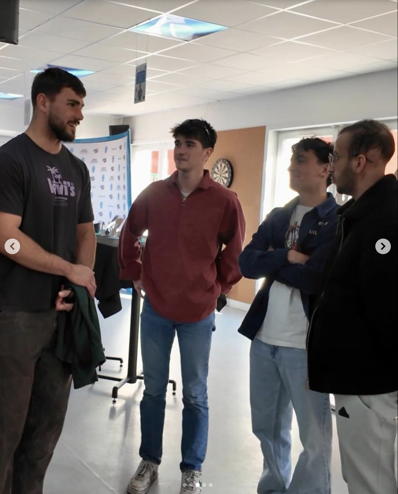
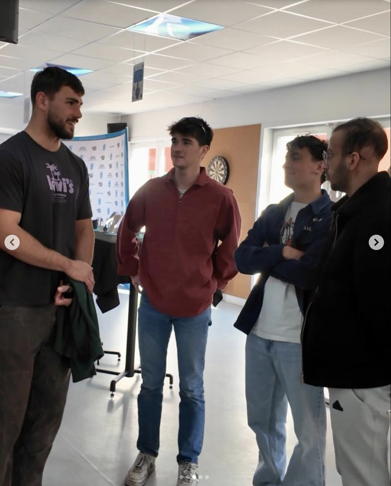

Activités Collectives
Découvrez nos activités collectives, pensées pour créer des souvenirs et renforcer les liens entre les jeunes accompagnés.
PSG VS Toulouse
On revient cette fois sur un match de ligue 1 PSG VS Toulouse, auquel on a eu la chance d‚Äôassister avec Wassim et Salim ‚ù§Ô∏èüíô
√áa s‚Äôest pass√© le 22 novembre dernier avec Domitille, Antoine, Axel et Th√©odore, mais on s‚Äôen rappelle comme si c‚Äô√©tait hier avec les 3 buts de Paris üèÜ et l‚Äôambiance √©lectrique √† c√¥t√© des supporters adverses ‚úä


Mamma Mia
Mamma Mia, en comédie musicale ! Pauline et Héloïse ont accompagné Chloé, Axelle et Louna pour profiter des chants d’ABBA à la Seine Musicale.

Handball Maïa
Samedi 3 avril, Ma√Øa a accompagn√© Val√©rie voir les 1/8e de finale de ligue des Champions de handball, PSG vs Szeged ‚ù§Ô∏èüíô. Malgr√© la d√©faite, l‚Äôambiance √©tait incroyable √† c√¥t√© des Ultras !


Projet C7
Il y a 1 mois, Mathis et Axel ont accompagn√© St√©phane pour aller voir un match de rugby de Massy en Nat.3 üèâ le 29 mars dernier.
Ils ont eu la chance d‚Äô√™tre au c√¥t√© du num√©ro 8, bless√© : Simon Cowley ü§© Visite des locaux du club, vestiaires et salle de sport üèüÔ∏è, puis McDo üçî et bowling üé≥.
 

Hand : PSG vs Nantes
Le 9 mars, Axel et Ted, avec Kacper, Martyna, Ilya et Basile, ont vu le PSG l‚Äôemporter 34-28 üèÜ. Cadeau¬†: √©charpe du club üî¥üîµ.

PSG vs Lyon
Le 18 janvier, Victoria, Tomas et Ma√Øa ont accompagn√© Kacper et sa s≈ìur au Parc des Princes üèüÔ∏è pour le match f√©minin PSG vs Lyon ü§™.

PSG vs SCP
Le 30 octobre, Kacper, son papa et Chrislène ont assisté à la victoire 30-28 en LdC handball et reçu une balle dédicacée ⚽️.